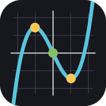

Formeleditor & Funktionen-Explorer
Für Pages, Keynote und Numbers auf iPad und Mac – Version 1.3.2
FormeleditorFormeln setzen und mit SymPy, NumPy, SciPy berechnen; als Gleichung nach iWork

Funktionen-ExplorerGraphen, Nullstellen, Extrema, Wendestellen, Integrale; als Bild nach iWorkAuf den Home-Bildschirm (iPad)
- Programm oben antippen.
- In Safari Teilen (□↑) → Zum Home-Bildschirm → Hinzufügen.
- Einmal mit Internet öffnen und warten, bis oben „Python … SymPy …“ steht – danach geht es auch offline.
In Pages, Keynote, Numbers
- Formel: „⧉ Für Pages/Keynote/Numbers“ → in iWork Einfügen → Gleichung (iPad: + → Form…/Gleichung) → einsetzen → Einfügen.
- Formel bearbeiten: Gleichung in iWork öffnen, Text kopieren → im Formeleditor „⟲ Aus iWork laden“.
- Grafik: „⧉ Bild kopieren“ → im Dokument einsetzen; „⟲ Grafik öffnen …“ oder „Verlauf“ zum Weiterbearbeiten.
Herunterladen
- Formeleditor-Mac.zip – Mac-Programm mit LibreOffice-Erweiterung (installieren.command doppelklicken)
- funktionen-explorer.oxt – Funktionen-Explorer für LibreOffice (Extras → Erweiterungen → Hinzufügen)
- Funktionen-Explorer-Python.zip – Python-Fassung (funktionen_explorer.py, polynom_explorer.py, herleitung.py)
- funktionen-explorer.html und polynom-explorer.html – eigenständige Dateien für jeden Browser